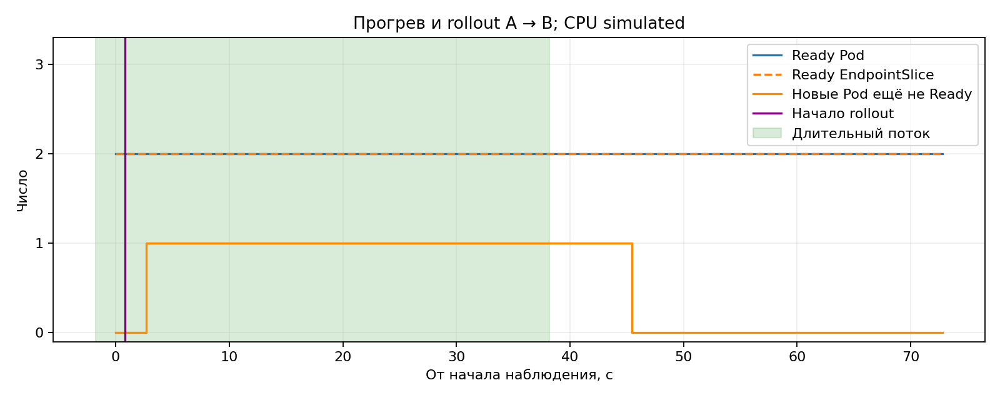
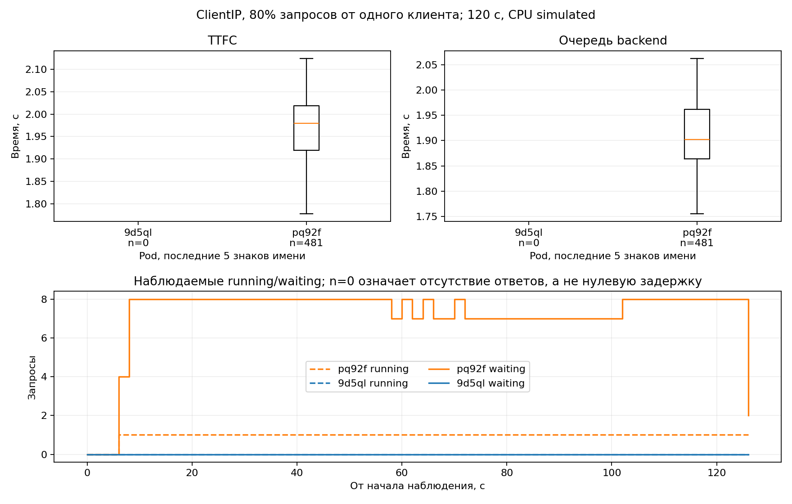
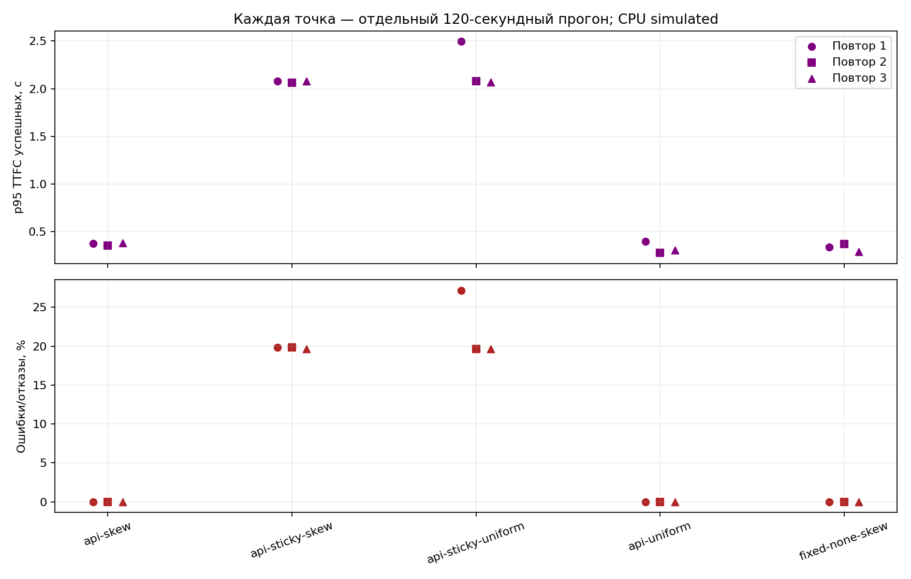
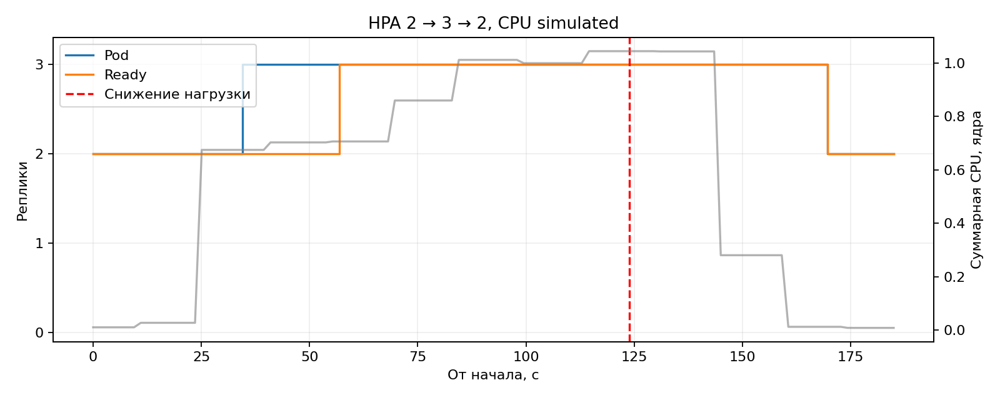

Все обязательные опыты выполнены; подробности и ограничения приведены ниже.
Репозиторий: MLOps_dz11. Коммит реализации: 6dab173edaf002ae3fe044a24d8647fce3910b69. Сырые данные и итоговые материалы сохраняются отдельным коммитом после измерений.
Разместите свой API в Kubernetes, воспроизведите три эксплуатационные проблемы и подтвердите исправления замерами.
Полное исходное задание: homework11.html. Основа API ДЗ 8–10 сохранена в legacy; перенесены проверка SHA артефакта, неизменная загруженная версия и готовность после прогрева. Добавлены ограниченная очередь, потоковая выдача, внешний контекст диалога и инструменты наблюдения.
Backend во всех основных сравнениях — simulated. Веса Qwen, обучение и GPU не используются. Файл model.json приходит из ConfigMap, сверяется SHA256 и загруженной версией. Каждая реплика независимо восстанавливает этот файл; кеш и состояние очереди локальны, история диалога целиком передаётся в запросе.
Число реплик — 2, HPA — 2–3; requests 250m/80Mi, limits 600m/192Mi на API. Прогрев — 20 с, startup — до 90 с, readiness — после прогрева, liveness — доступность HTTP. Grace period — 75 с, preStop снимает readiness и даёт 4 с распространиться изменению endpoints; Uvicorn ждёт активные потоки до 60 с.
Источник артефакта, образ, версия, прогрев, очередь и реплики заданы в Helm values. Зафиксированы pyproject.toml, uv.lock, requirements.txt и версии инструментов. Prometheus хранит не более 2 ч/128 MB, том ограничен 256 MiB, Grafana — 128 MiB. Удаление только своего стенда: pwsh -File stand.ps1 down; глобальный docker prune не применяется.
{
"platform": "Windows-10-10.0.19045-SP0",
"python": "3.12.3",
"logical_cpu": 8,
"limits": {
"wsl_memory_gb": 6,
"wsl_processors": 4,
"wsl_swap_mb": 512,
"api_memory_limit_mib": 192,
"api_cpu_limit_cores": 0.6,
"prometheus_retention_hours": 2,
"prometheus_retention_mb": 128,
"prometheus_volume_limit_mib": 256,
"grafana_volume_limit_mib": 128
},
"docker": {
"ServerVersion": "29.9.2",
"NCPU": 4,
"MemTotal": 6216531968,
"KernelVersion": "6.18.58.1-microsoft-standard-WSL2",
"CgroupVersion": "2"
},
"kind": "kind v0.30.0 go1.24.6 windows/amd64",
"helm": "v3.18.6+gb76a950",
"kubectl": "v1.34.0",
"kubernetes": "v1.34.0",
"kind_node_bytes": {
"SizeRw": 3563520,
"SizeRootFs": 1009307648
},
"kind_var_volume_bytes": 3284373504,
"node_plus_var_estimate_gb": 4.29
}Полные сведения: состояние до опытов, итоговое состояние, свободное место до запуска, размер файловой системы своего узла, Docker disk usage. Общий диск Docker содержит предыдущие работы и целиком этому стенду не приписывается.
Гипотеза: HTTP-процесс может быть жив, пока backend не готов. Воспроизведение: Helm brokenProbes=true направляет startup/readiness в /health. Исправление: отдельные /startup и /ready; backend остаётся тем же. Подтверждение — HTTP-коды, серверные записи cold, Ready и EndpointSlice до/после. Штатное обновление A→B выполняется при активном длинном потоке; от него требуется ноль 5xx и оборванных потоков. Неготовая B не должна войти в рабочие endpoints, затем Helm rollback возвращает A. SIGKILL исследуется отдельно и не маскируется повтором клиента.
Сравниваются Service None и ClientIP над одним Deployment. Четыре клиентских Pod имеют разные IP; HTTP keep-alive отключён. iptables выбирает endpoint на соединение, поэтому None не называется строгим round-robin. В равномерном сценарии клиенты чередуются; в перекошенном 80% отправок назначены client-0. Для каждой пары policy/traffic предусмотрено три повтора по 120 с; после исправления ClientIP→None — ещё три перекошенных прогона. Каждый прогон начинает с пустого локального кеша.
Имитатор: running=1, waiting≤8; LRU-кеш содержит не более 16 префиксов. Cache hit стоит 0,04 CPU-с, miss — 0,24 CPU-с; каждая часть — 0,01 CPU-с, всего 4 части с интервалом 0,05 с. Работа PBKDF2 измеряется thread_time, а не заменяется sleep. План — 5 запросов/с, 600 на прогон. Истинные график отправки, задержка генератора и наблюдённый клиентский IP сохраняются. Неожиданное отсутствие перекоса сохраняется вместе с трассой и не подменяется ожидаемым результатом.
| Прогон | Попытки | Успешные n | Исходы | p50 TTFC, с | p95 TTFC, с | p50 ответа, с | p95 ответа, с | p95 очереди, с | p95 задержки отправки, с | Ошибки, % |
|---|---|---|---|---|---|---|---|---|---|---|
| a-bad-rollback | 70 | 70 | {'completed': 70} | 0.055 | 0.390 | 0.241 | 0.576 | 0.001 | 0.005 | 0.0 |
| a-broken | 56 | 20 | {'http_error': 36, 'completed': 20} | 0.386 | 0.574 | 0.575 | 0.761 | 0.184 | 0.003 | 64.3 |
| a-fixed-warmup | 120 | 120 | {'completed': 120} | 0.056 | 0.397 | 0.241 | 0.582 | 0.008 | 0.003 | 0.0 |
| a-rollout-initial-2rps | 140 | 121 | {'completed': 121, 'rejected': 19} | 0.056 | 32.315 | 0.242 | 32.499 | 32.258 | 0.003 | 13.6 |
| a-rollout | 35 | 35 | {'completed': 35} | 0.162 | 14.428 | 0.347 | 14.613 | 14.266 | 0.009 | 0.0 |
| b-api-skew-1 | 600 | 600 | {'completed': 600} | 0.093 | 0.373 | 0.278 | 0.558 | 0.267 | 0.004 | 0.0 |
| b-api-skew-2 | 600 | 600 | {'completed': 600} | 0.091 | 0.354 | 0.277 | 0.544 | 0.253 | 0.003 | 0.0 |
| b-api-skew-3 | 600 | 600 | {'completed': 600} | 0.091 | 0.382 | 0.276 | 0.570 | 0.278 | 0.003 | 0.0 |
| b-api-sticky-skew-1 | 600 | 481 | {'completed': 481, 'rejected': 119} | 1.979 | 2.081 | 2.167 | 2.268 | 2.002 | 0.002 | 19.8 |
| b-api-sticky-skew-2 | 600 | 481 | {'completed': 481, 'rejected': 119} | 1.991 | 2.061 | 2.176 | 2.248 | 1.979 | 0.003 | 19.8 |
| b-api-sticky-skew-3 | 600 | 482 | {'completed': 482, 'rejected': 118} | 1.980 | 2.079 | 2.166 | 2.265 | 1.999 | 0.002 | 19.7 |
| b-api-sticky-uniform-1 | 600 | 437 | {'completed': 437, 'rejected': 163} | 2.211 | 2.496 | 2.414 | 2.704 | 2.386 | 0.006 | 27.2 |
| b-api-sticky-uniform-2 | 600 | 482 | {'completed': 482, 'rejected': 118} | 1.978 | 2.078 | 2.165 | 2.264 | 1.997 | 0.002 | 19.7 |
| b-api-sticky-uniform-3 | 600 | 482 | {'completed': 482, 'rejected': 118} | 1.967 | 2.067 | 2.153 | 2.253 | 1.986 | 0.002 | 19.7 |
| b-api-uniform-1 | 600 | 600 | {'completed': 600} | 0.094 | 0.396 | 0.282 | 0.583 | 0.283 | 0.002 | 0.0 |
| b-api-uniform-2 | 600 | 600 | {'completed': 600} | 0.091 | 0.276 | 0.276 | 0.462 | 0.188 | 0.002 | 0.0 |
| b-api-uniform-3 | 600 | 600 | {'completed': 600} | 0.093 | 0.305 | 0.278 | 0.491 | 0.200 | 0.002 | 0.0 |
| b-fixed-none-skew-1 | 600 | 600 | {'completed': 600} | 0.093 | 0.336 | 0.278 | 0.521 | 0.233 | 0.004 | 0.0 |
| b-fixed-none-skew-2 | 600 | 600 | {'completed': 600} | 0.094 | 0.370 | 0.279 | 0.554 | 0.254 | 0.003 | 0.0 |
| b-fixed-none-skew-3 | 600 | 600 | {'completed': 600} | 0.089 | 0.290 | 0.273 | 0.474 | 0.185 | 0.004 | 0.0 |
| c-alerts | 2700 | 548 | {'completed': 548, 'rejected': 2152} | 2.046 | 2.056 | 2.232 | 2.244 | 1.999 | 0.002 | 79.7 |
| c-hot-sticky | 1440 | 584 | {'completed': 584, 'rejected': 856} | 2.028 | 2.066 | 2.214 | 2.253 | 1.999 | 0.002 | 59.4 |
| c-hpa-initial-warmup | 1440 | 1105 | {'completed': 1105, 'rejected': 335} | 1.793 | 2.054 | 1.980 | 2.240 | 1.987 | 0.002 | 23.3 |
| c-hpa-load | 1440 | 1186 | {'completed': 1186, 'rejected': 254} | 1.571 | 2.074 | 1.758 | 2.259 | 1.993 | 0.002 | 17.6 |
| metric-comparison-unstable-pods | 16 | 16 | {'completed': 16} | 0.061 | 0.655 | 0.248 | 0.846 | 0.219 | 0.005 | 0.0 |
| metric-comparison | 16 | 16 | {'completed': 16} | 0.105 | 0.611 | 0.295 | 0.797 | 0.189 | 0.004 | 0.0 |
HPA autoscaling/v2 использует CPU относительно requests, диапазон 2–3, scaleDown stabilization 30 с. Нагрузка вычислительная. До измерения проверяются metrics.k8s.io, requests и условия HPA; сохраняются реальные времена создания и готовности третьего Pod, затем возврат к двум. Горячий клиент повторяется при ClientIP: новая реплика сама по себе не отменяет старую привязку.
Алерт HighTTFC: p95 за 30 с >0,8 с при ≥20 наблюдениях, for=15 с. HighRejectionRatio: доля rejected >10% за 30 с при ≥20 исходах, for=15 с. Управляемая нагрузка должна показать inactive→pending→firing→inactive. Настройки находятся в chart/templates/monitoring.yaml; экспорт дашборда — chart/dashboards/hw11.json, запросы — monitoring/queries.json.
Клиент фиксирует perf_counter для плана, отправки, первой содержательной части и завершения; Unix-время служит для сопоставления с Kubernetes, не для расчёта задержек. TTFC=first−sent, полная задержка=end−sent, inter-chunk latency — разность соседних моментов получения содержательных частей. Для N частей имеется N−1 интервалов; при N=1 список пуст. Служебное done не считается содержательной частью. Это части имитатора, поэтому TTFT, TPOT и tokens/s не заявляются.
Запланированные, отправленные, completed, rejected, aborted, timeout и transport_error учитываются отдельно; HTTP 200 без конечного done считается обрывом. Процентили p50/p95 считаются только для completed, рядом приводятся n и доля ошибок. Histogram использует границы 0.025…51.2 с; PromQL суммирует bucket по le и нужным разрезам. Сравнение с клиентом проводится для одинакового ограниченного набора ответов с вычитанием bucket до/после, отдельно от фоновых опытов. Идентификаторы запросов и диалогов не становятся метками Prometheus. В мастер-CSV source_run различает отдельно повторённые опыты; исходный request_id сохраняется. CSV округлён до микросекунд, полная точность сохранена в исходных JSON.




Опыт A. До исправления: 36 HTTP-ошибок из 56; после исправления — 120/120 завершённых ответов. Штатный rollout при 0,5 запроса/с: 35/35 фоновых запросов завершены, плюс отдельный длительный поток. В первоначальном опыте 2 запроса/с было 19 HTTP 429: длинный поток занимает единственный слот, и ограниченная очередь не создаёт дополнительную пропускную способность. Этот опыт сохранён отдельно и не скрыт под успешным результатом при меньшей нагрузке. После неготовой B и отката завершено 70 ответов версии A. При SIGKILL получено 2 части и исход aborted; после восстановления загружена A.
Опыт B. b-api-skew: 3 повтора; завершено 1800/1800, p95 TTFC по повторам 0.354–0.382 с. b-api-sticky-skew: 3 повтора; завершено 1444/1800, p95 TTFC по повторам 2.061–2.081 с. b-api-sticky-uniform: 3 повтора; завершено 1401/1800, p95 TTFC по повторам 2.067–2.496 с. b-api-uniform: 3 повтора; завершено 1800/1800, p95 TTFC по повторам 0.276–0.396 с. b-fixed-none-skew: 3 повтора; завершено 1800/1800, p95 TTFC по повторам 0.290–0.370 с.
В b-api-sticky-skew-1 очередь одной готовой реплики одновременно со свободной другой наблюдалась в 61/64 точках Prometheus с шагом около 2 с. Маршруты client IP → Pod и случаи без устойчивого перекоса при None сохранены в routing-analysis.json. Cache hit в этих опытах близок к 99%; небольшая экономия пересчёта не компенсирует очередь. Это результат заданной модели CPU-нагрузки, а не измерение настоящего KV-cache.
Опыт C. Третий Pod наблюдался: True. Возврат к двум репликам зарегистрирован через 61.7 с после последней фактической отправки. Это полная задержка, включающая окно метрик, цикл контроллера и стабилизацию, а не точное равенство настройке 30 с. Первый прогон, начавшийся до окончательного прогрева второй реплики после передачи управления HPA, сохранён отдельно как c-hpa-initial-warmup; итоговый повтор начинается строго с двух Ready Pod.
Новый Pod api-8f779df47-g5ljc: создан через 30.3 с после начала поступления нагрузки, стал Ready через 52.3 с; от создания до готовности прошло 22.0 с.
Алерты. HighTTFC: firing, inactive, pending. HighRejectionRatio: firing, inactive, pending.
Сопоставление одного набора: 16 успешных ответов; клиентский p95 TTFC=0.611 с, Histogram p95=0.754 с. Счётчик Histogram вырос ровно на 16, состав Pod не менялся. Classic Histogram интерполирует внутри bucket, а клиент вычисляет квантиль по отдельным значениям и включает сеть. При границе 0,4–0,8 с оценка довольно грубая; для более точного серверного p95 нужны более узкие bucket и новый прогон. До/после, точный период и PromQL сохранены в prometheus-comparison.json. Первая попытка остановлена проверкой неизменности Pod и сохранена отдельно, для сопоставления с Prometheus она не использована.
tests/test_kubernetes.py проверяет живые HTTP в Kubernetes: исключение непрогретого Pod из endpoints, фактическую версию после отката, восстановление артефакта/истории после замены Pod, отдельный учёт отказов и обрывов, изоляцию двух контрольных диалогов. results/checks содержит фактические ответы; неподтверждённые проверки не считаются пройденными.
{
"exit_code": 0,
"log": "results/kubernetes-checks.log",
"tests": 7,
"kubernetes_checks": 5
}
Один узел kind, Windows/WSL и CPU-имитатор не представляют production inference engine. Prefix cache воспроизводит заданную стоимость и не хранит реальные KV. Нет автоматического переноса начатого потока, распределённого кеша или автоматических клиентских повторов. Исправление маршрутизации требует повторного измерения с настоящей моделью, её prefill/decode и сетевым стеком.
# Ревью предложения о постоянной привязке диалога Постоянную привязку диалога к Pod при указанных условиях не принимаю. Если A начинает обработку через 3 секунды, а свободная B пересчитывает префикс за 0,8 секунды, для нового запроса предпочтительна B. Предварительная разница составляет 2,2 секунды до начала следующего этапа. Это оценка при заданных условиях, а не измеренное ускорение полного ответа. Нужно сравнивать ожидаемое время до первой содержательной части с учётом очереди, prefill, передачи контекста и текущей загрузки. Кеш — один из факторов выбора, а не основание игнорировать перегрузку. До допуска нового запроса нужны свежие running/waiting по каждой реплике, p50/p95 ожидания и TTFC, доля отказов, длины запросов, hit/miss и стоимость пересчёта. Сигналам о загрузке нужен срок годности. Очередь должна иметь ограничение; при исчерпании ёмкости запрос получает явный отказ с возможностью повторить его отдельной попыткой. Повторы не скрываются в статистике. Для настоящего inference engine дополнительно проверяются TTFT, длина decode, использование KV-cache и стоимость передачи состояния. История диалога должна приходить в запросе либо храниться во внешнем хранилище. После потери A новая реплика получает полную подтверждённую историю и восстанавливает контекст; локальный кеш заново вычисляется. Идентификатор сессии не заменяет историю. Уже начатый поток остаётся на A до завершения или явной отмены в пределах grace period. Переносить середину потока на B без протокола продолжения нельзя: после обрыва клиенту сообщается ошибка, а повтор получает отдельный request ID. В данном стенде автоматическое продолжение оборванного потока не реализовано. Это соответствует кейсу Google Cloud из лекции 11, слайд 70, около 08:20 видео. В первичном описании Vertex AI/GKE Inference Gateway учитываются и содержимое запроса, и загрузка; для горячих префиксов усилен вес очереди и используется admission control. Результаты Google относятся к их production-нагрузке и не переносятся на этот CPU-имитатор. Здесь проверяется более простое исправление: убрать постоянную ClientIP-привязку и подтвердить эффект повторным одинаковым сценарием. Источник: [How we cut Vertex AI latency by 35% with GKE Inference Gateway](https://cloud.google.com/blog/products/containers-kubernetes/how-gke-inference-gateway-improved-latency-for-vertex-ai), Google Cloud, 07.02.2026.
Первичный источник кейса Google Cloud из слайда 70 лекции 11.
Разделение liveness, startup и readiness устранило ранний допуск непрогретых Pod: после исправления завершены все 120 запросов. Штатное обновление при выбранной ограниченной нагрузке сохранило длительный поток; неготовая версия исключалась из трафика, откат возвращал A. В трёх перекошенных прогонах ClientIP завершены 1444 из 1800 запросов, после перехода на None — все 1800. HPA показал 2→3→2, два алерта прошли pending/firing и вернулись в норму; семь собственных проверок прошли. Численные результаты относятся к CPU-имитатору, одному локальному узлу и сохранённым условиям нагрузки.